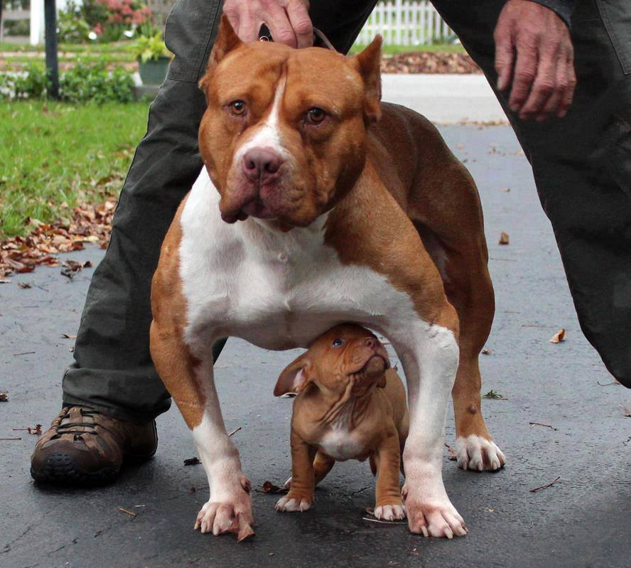

Esta civilizacion es muy noble y apoya a quien lo necesita.
Esta civilizacion es muy amistosa pero son de un temperamento un poco agresivo si se les provoca.
Civilizacion muy pequeña son pocos en ella, son muy trabajadores y unidos entre ellos
Esta civilizacion es muy grande y unida cada que hay un problema se juntan todos y son muy temperamentales
El pastor australiano de cola corta es un excelente perro de trabajo que destaca por su vitalidad e inteligencia. Siempre dispuesto a complacer a sus tutores, esta raza se creó para pasar largas jornadas pastoreando rebaños en el campo, pero hoy en día podemos encontrar pastores australianos de cola corta compitiendo en multitud de deportes caninos y ejerciendo todo tipo de labores, incluida la de animal de compañía, gracias a su versatilidad y su notable capacidad de adaptación.
Esta civilizacion es mediana y suelen andar solos, atacan cuando se sienten amenzados.